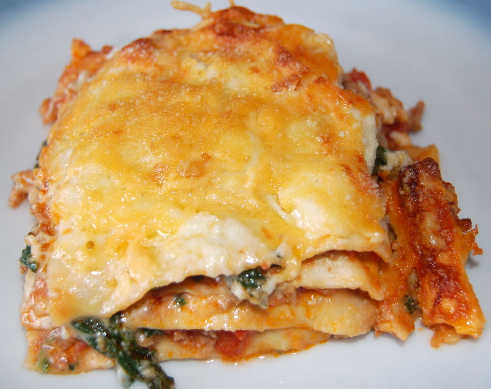

Home
Lasagne

Ingridients
FÜR DIE BOLOGNESESAUCE
- 500 g gemischtes Hackfleisch - sprich halb Rind und halb Schwein
- 400 g passierte Tomaten
- 50 g Bauchspeck - idealerweise Pancetta, wenn möglich
- 2-3 Zwiebeln - ca. 150 g
- 1 Möhre - ca. 50 g
- Stangensellerie (geputzt) - ca. 50 g
- 200 ml Vollmilch
- 40 g Butter
- 1 EL Pflanzenöl, neutral - z.B. Sonnenblumen oder Rapsöl
- 1 EL Tomatenmark
- 1 Lorbeerblatt, getrocknet
- 1 Msp. Muskatnuss, gerieben
- Salz und schwarzer Pfeffer aus der Mühle
FÜR DIE LASAGNE
- 8-12 Stück Lasagneplatten, ungekocht - Menge je nach Größe der Auflaufform
- 150 g Parmesan, frisch gerieben
- Butter - für die Form und das Topping
Für die Béchamelsauce
- 500 ml Milch
- 25 g Mehl
- 25g Butter
- Salz
- schwarzer Pfeffer aus der Mühle
- Muskatnuss, frisch gerieben
Anleitung
IDK Figure it out yourself lol